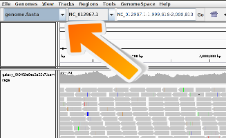

Within a cell nucleus, the DNA is tightly-packed and the chromatin is spatially distributed with different levels and scales of organizations.
At the smallest scale, DNA is packaged into units called nucleosomes, made of eight histone proteins.
On a larger scale than nucleosomes, DNA is forming loops. DNA elements that would be otherwise separated by large distances can interact. The corresponding self-interacting (or self-associating) domains are found in many organisms: they are called Topologically Associating Domains (TADs) in mammalian cells. Mammalian chromosomes are also partitioned into two spatial compartments, labeled “A” and “B”, where regions in compartment A tend to interact preferentially with A compartment-associated regions than B compartment-associated ones. Similarly, regions in compartment B tend to associate with other B compartment-associated regions.
Comment: Tip: Learn more about chromosome conformation
To learn more about chromosome conformation and TADs, you can follow our HiC tutorial
In mammals, the X chromosome inactivation (XCI) balances the dosage of X-linked genes between females and males. The genes on the inactive X (Xi) chromosome are not expressed.
Binding certain molecules to histone proteins can modify the chromatin structure and may result in changes in transcription level. For example, the H3K4me3 results from adding 3 methyl-group to the 4th lysine in the histone 3 protein. This modification is known to activate the transcription on nearby genes by opening the chromatin. The H3K27me3 on the other hand is inactivating the transcription of the nearby genes:
More H3K27me3 and less H3K4me3 on the Xi could explain a lower expression of the genes there.
It has been also observed that the Xi reconfigures uniquely into a specific chromosomal conformation. cohesins, condensins and CCCTC-binding factor (CTCF) play key roles in chromosomal architectures and TAD formation which are other potential cause of the repression of the expression of the genes on Xi.
The structural-maintenance-of-chromosomes hinge domain containing 1 (SMCHD1) has been found enriched on the Xi. It may be the potential actor in the shape of Xi and the change in gene expression there.
Wang et al. 2018 investigates the mechanism by which the SMCHD1 gene shapes the Xi and represses the expression of the genes on Xi in mouse.
Their idea was to identify the differences which could be observed between the Xi and activated X chromosome, on both wild-type and SMCHD1 gene knockdown samples to study the SMCHD1 effect.
In different experiments, they targeted histones with H3K27me3 or H3K4me3 and CTCF using ChIP-seq experiments.
They obtained sequences corresponding to a portion of DNA linked to histones with H3K27me3, H3K4me3 or CTCF. Using this information, they could identify if there are differences in the H3K27me3, H3K4me3 and CTCF between the X (active or inactive) chromosomes and the potentially influenced genes.
In the upcoming tutorial, we will only use the wild type data from Wang et al. 2018 and analyze the ChIP-seq data step by step:
CTCF with 2 replicates: wt_CTCF_rep1 and wt_CTCF_rep2
H3K4me3 with 2 replicates: wt_H3K4me3_rep1 and wt_H3K4me3_rep2
H3K27me3 with 2 replicates: wt_H3K27me3_rep1 and wt_H3K27me3_rep2
‘input’ with 2 replicates: wt_input_rep1 and wt_input_rep2
In ‘input’ samples, the same treatment as the ChIP-seq samples was done except for the immunoprecipitation step.
They are also used along with the ‘ChIP-seq’ samples to identify the potential sequencing bias and help for differential analysis.
Step 1: Quality control and treatment of the sequences
The first step of any ChIP-Seq data analysis is quality control of the raw sequencing data.
To save time, we will do it only on the data of one sample wt_H3K4me3_rep1 which has been already down-sampled. keep in mind that with real data this should be done on each and every sample.
Hands-on: Import the data
Create a new history for this tutorial and give it a proper name
To create a new history simply click the new-history icon at the top of the history panel:
Click on galaxy-pencil (Edit) next to the history name (which by default is “Unnamed history”)
Type the new name
Click on Save
To cancel renaming, click the galaxy-undo “Cancel” button
If you do not have the galaxy-pencil (Edit) next to the history name (which can be the case if you are using an older version of Galaxy) do the following:
Click on Unnamed history (or the current name of the history) (Click to rename history) at the top of your history panel
Type the new name
Press Enter
Import wt_H3K4me3_read1.fastq.gz and wt_H3K4me3_read2.fastq.gz from Zenodo or from the data library (ask your instructor)
Click galaxy-uploadUpload Data at the top of the tool panel
Select galaxy-wf-editPaste/Fetch Data
Paste the link(s) into the text field
Press Start
Close the window
As an alternative to uploading the data from a URL or your computer, the files may also have been made available from a shared data library:
Go into Data (top panel) then Data libraries
Navigate to the correct folder as indicated by your instructor.
On most Galaxies tutorial data will be provided in a folder named GTN - Material –> Topic Name -> Tutorial Name.
Select the desired files
Click on Add to Historygalaxy-dropdown near the top and select as Datasets from the dropdown menu
In the pop-up window, choose
“Select history”: the history you want to import the data to (or create a new one)
Click on Import
As default, Galaxy takes the link as name, so rename them.
Rename the files wt_H3K4me3_read1 and wt_H3K4me3_read2
Click on the galaxy-pencilpencil icon for the dataset to edit its attributes
In the central panel, change the Name field
Click the Save button
Inspect the first file by clicking on the galaxy-eye (eye) icon (View data)
Question
How are the DNA sequences stored?
What are the other entries of the file?
The DNA sequences are stored in a FASTQ file, in the second line of every 4-line group.
This file format is called FASTQ format. It stores sequence information and quality information. Each sequence is represented by a group of 4 lines with the 1st line being the sequence id, the second the sequence of nucleotides, the third a transition line and the last one a sequence of quality score for each nucleotide.
During sequencing, errors are introduced, such as incorrect nucleotides being called. These are due to the technical limitations of each sequencing platform. Sequencing errors might bias the analysis and can lead to a misinterpretation of the data.
Sequence quality control is therefore an essential first step in your analysis. We use here similar tools as described in “Quality control” tutorial: FastQC and Trim Galore.
Hands-on: Quality control
Run FastQC ( Galaxy version 0.73+galaxy0) with the following parameters:
param-files“Short read data from your current history”: wt_H3K4me3_read1 and wt_H3K4me3_read2 (Input datasets selected with Multiple datasets)
Click on param-filesMultiple datasets
Select several files by keeping the Ctrl (or COMMAND) key pressed and clicking on the files of interest
Inspect the generated HTML files
Question
How is the quality of the reads in wt_H3K4me3_read1?
And in wt_H3K4me3_read2?
What should we do if the quality of the reads is not good?
The reads in wt_H3K4me3_read1 are of good quality:
There is 50,000 sequences, all of 51 bp
The “Per base sequence quality” is not decreasing too much at the end of the sequences
The sequence NNNNNNNNNNNNNNNNNNNNNNNNNNNNNNNNNNNNNNNNNNNNNNNNNNN is over represented
Despite these small things, the overall quality of the reads is really good.
If the quality of the reads is not good, we should:
Check what is wrong and think about it: it may come from the type of sequencing or what we sequenced (high quantity of overrepresented sequences in transcriptomics data, biaised percentage of bases in HiC data)
Ask the sequencing facility about it
Perform some quality treatment (in a reasonable way to not loose too much information) with some trimming or removal of bad reads
It is often necessary to trim sequenced read, for example, to get rid of bases that were sequenced with high uncertainty (= low quality bases) at the read ends.
Question
What is the relation between wt_H3K4me3_read1 and wt_H3K4me3_read2 ?
The data has been sequenced using paired-end sequencing.
The paired-end sequencing is based on the idea that the initial DNA fragments (longer than the actual read length) is sequenced from both sides. This approach results in two reads per fragment, with the first read in forward orientation and the second read in reverse-complement orientation. The distance between both reads is known. Thus, it can be used as an additional piece of information to improve the read mapping.
With paired-end sequencing, each fragment is more covered than with single-end sequencing (only forward orientation sequenced):
One file with the sequences corresponding to forward orientation of all the fragments
One file with the sequences corresponding to reverse orientation of all the fragments
Here wt_H3K4me3_read1 corresponds to the forward reads and wt_H3K4me3_read2 to the reverse reads.
Hands-on: Trimming low quality bases
Run Trim Galore! ( Galaxy version 0.6.7+galaxy0) with the following parameters:
“Is this library paired- or single-end?”: Paired-end
param-file“Reads in FASTQ format”: wt_H3K4me3_read1 (Input dataset)
param-file“Reads in FASTQ format”: wt_H3K4me3_read2 (Input dataset)
The order is important here!
If your FASTQ files cannot be selected, you might check whether their format is FASTQ with Sanger-scaled quality values (fastqsanger). You can edit the data type by clicking on the pencil symbol.
“Trim Galore! advanced settings”: Full parameter list
“Trim low-quality ends from reads in addition to adapter removal”: 15
“Overlap with adapter sequence required to trim a sequence”: 3
“Generate a report file”: Yes
Inspect the generated txt file (report file)
Question
How many basepairs has been removed from the forwards reads because of bad quality?
And from the reverse reads?
How many sequence pairs have been removed because at least one read was shorter than the length cutoff?
32,198 bp (1.3%) (first Quality-trimmed:)
116,414 bp (4.6%) (second Quality-trimmed:). It is not a surprise: we saw that the quality was dropping more at the end of the sequences for the reverse reads thant for the forward reads.
1569 (3.14%) sequences (last line of the file)
Step 2: Mapping of the reads
With ChiP sequencing, we obtain sequences corresponding to a portion of DNA linked to the histone mark of interest, H3K4me3 in this case. As H3K4me3 opens the chromatime, nearby genes are gioing to be more transcribed. It would be interesting to know if there is a difference in the quantity of DNA impacted by H3K4me3 and the impacted genes between active and inactive X chromosome.
We first need to figure out where the sequenced DNA fragments originated from in the genome. The reads must be aligned to a reference genome to identify the binding sites.
This is equivalent to solving a jigsaw puzzles, but unfortunately, not all pieces are unique.
In principle, we could do a BLAST analysis to figure out where the sequenced pieces fit best in the known genome. Aligning millions of short sequences this way may, however, take a couple of weeks. And we do not really care about the exact base to base correspondence (alignment). What we are really interested in is “where these reads came from”. This approach is called mapping.
Nowadays, there are many mapping programs for shotgun sequenced DNA. We will use Bowtie2.
Question
What is a reference genome?
For each model organism, several possible reference genomes may be available (e.g. hg19 and hg38 for human). What do they correspond to?
Which reference genome should we use?
A reference genome (or reference assembly) is a set of nucleic acid sequences assembled as a representative example of a species’ genetic material. As they are often assembled from the sequencing of different individuals, they do not accurately represent the set of genes of any single organism, but a mosaic of different nucleic acid sequences from each individual.
As the cost of DNA sequencing falls, and new full genome sequencing technologies emerge, more genome sequences continue to be generated. Using these new sequences, new alignments are built and the reference genomes improved (fewer gaps, fixed misrepresentations in the sequence, etc). The different reference genomes correspond to the different released versions (called “builds”).
Wang et al. (2018) did ChIP-seq on mouse. So we should use the mouse reference genome. We will use mm10 (the latest build)
Running Bowtie2
Hands-on: Mapping
Bowtie2 ( Galaxy version 2.5.0+galaxy0) with the following parameters:
“Is this single or paired library”: Paired-end
param-file“FASTA/Q file #1”: trimmed reads pair 1 (output of Trim Galore!tool)
param-file“FASTA/Q file #2”: trimmed reads pair 2 (output of Trim Galore!tool)
“Will you select a reference genome from your history or use a built-in index?”: Use a built-in genome index
“Save the bowtie2 mapping statistics to the history”: Yes
Inspect the mapping stats
Question
How many reads where mapped? Uniquely or several times?
The overall alignment rate is 98.57%. This score is quite high. If you have less than 70-80%, you should investigate the cause: contamination, etc.
41514 (85.72%) reads have been aligned concordantly exactly 1 time and 5190 (10.72%) aligned concordantly >1 times. The latter ones correspond to multiple mapped reads. Allowing for multiple mapped reads increases the number of usable reads and the sensitivity of peak detection;
however, the number of false positives may also increase.
The output of Bowtie2 is a BAM file.
Inspection of a BAM file
A BAM (Binary Alignment Map) file is a compressed binary file storing the read sequences, whether they have been aligned to a reference sequence (e.g. a chromosome), and if so, the position on the reference sequence at which they have been aligned.
Hands-on: Inspect a BAM/SAM file
Inspect the param-file output of Bowtie2tool
A BAM file (or a SAM file, the non-compressed version) consists of:
A header section (the lines starting with @) containing metadata particularly the chromosome names and lengths (lines starting with the @SQ symbol)
An alignment section consisting of a table with 11 mandatory fields, as well as a variable number of optional fields:
Col
Field
Type
Brief Description
1
QNAME
String
Query template NAME
2
FLAG
Integer
Bitwise FLAG
3
RNAME
String
References sequence NAME
4
POS
Integer
1- based leftmost mapping POSition
5
MAPQ
Integer
MAPping Quality
6
CIGAR
String
CIGAR String
7
RNEXT
String
Ref. name of the mate/next read
8
PNEXT
Integer
Position of the mate/next read
9
TLEN
Integer
Observed Template LENgth
10
SEQ
String
Segment SEQuence
11
QUAL
String
ASCII of Phred-scaled base QUALity+33
Question
Which information do you find in a SAM/BAM file?
What is the additional information compared to a FASTQ file?
Sequences and quality information, like a FASTQ
Mapping information, Location of the read on the chromosome, Mapping quality, etc
Visualization using a Genome Browser
Hands-on: Visualization of the reads in IGV
There are two ways to run it:
If you have IGV installed (or want to install it):
Click on the local in display with IGV to load the reads into the IGV browser
If you do not have IGV
Click on the Mouse mm10 (or correct organism) in display with IGV to load the reads into the IGV browser
Zoom on the chr2:91,053,413-91,055,345
The reads have a direction: they are mapped to the forward or reverse strand, respectively. When hovering over a read, extra information is displayed
Question
What could it mean if a bar in the coverage view is colored?
What could be the reason why a read is white instead of grey?
If a nucleotide differs from the reference sequence in more than 20% of quality weighted reads, IGV colors the bar in proportion to the read count of each base.
They have a mapping quality equal to zero. Interpretation of this mapping quality depends on the mapping aligner as some commonly used aligners use this convention to mark a read with multiple alignments. In such a case, the read also maps to another location with equally good placement. It is also possible that the read could not be uniquely placed but the other placements do not necessarily give equally good quality hits.
Comment: Tips for IGV
Because the number of reads over a region can be quite large, the IGV browser by default only displays the reads that fall into a small window. This behaviour can be changed in the IGV from view > Preferences > Alignments.
If the genome of your interest is not there check if it is available via More…. If this is not the case, you can add it manually via the menu Genomes -> Load Genome from…

A general description of the user interface of the IGV browser is available here: IGV Browser description
Step 3: ChIP-seq Quality Control
We already checked the quality of the raw sequencing reads in the first step.
Now we would like to test the quality of the ChIP-seq preparation, to know if our ChIP-seq samples are more enriched than the control (input) samples.
Correlation between samples
To assess the similarity between the replicates of the ChIP and the input, respectively, it is a common technique to calculate the correlation of read counts on different regions for all different samples.
We expect that the replicates of the ChIP-seq experiments should be clustered more closely to each other than the replicates of the input sample. That is, because the input samples should not have enriched regions included - remember the immuno-precipitation step was skiped during the sample preparation.
To compute the correlation between the samples we are going to to use the QC modules of deepTools, a software package for the QC, processing and analysis of NGS data. Before computing the correlation a time consuming step is required, which is to compute the read coverage (number of unique reads mapped at a given nucleotide) over a large number of regions from each of the inputed BAM files. For this we will use the tool multiBamSummarytool. Then, we use plotCorrelationtool from deepTools to compute and visualize the sample correlation. This is a fast process that allows to quickly try different color combinations and outputs.
Since in this tutorial we are interested in assessing H3K4me3, H3K27me3 and CTCF ChIP samples, the previous steps (quality control and mapping) needs to be run on all the replicates of ChIP samples as well as the input samples. To save time, we have already done that and you can now work directly on the BAM files of the provided 8 samples. For simplicity, the files include only the ChrX.
Hands-on: Correlation between samples
Create a new history
Import the 8 BAM files from Zenodo or from the data library into the history
multiBamSummary ( Galaxy version 3.5.1.0.0) with the following parameters:
“Sample order matters”: No
param-files“BAM/CRAM file”: the 8 imported BAM files
“Choose computation mode”: Bins
“Bin size in bp”: 1000
This corresponds to the length of the fragments that were sequenced; it is not the read length!
“Distance between bins”: 500
It reduces the computation time for the tutorial
“Region of the genome to limit the operation to”: chrX
Using these parameters, the tool will take bins of 1000 bp separated by 500 bp on the chromosome X. For each bin the overlapping reads in each sample will be computed and stored into a matrix.
plotCorrelation ( Galaxy version 3.5.1.0.0) with the following parameters:
param-files“Matrix file from the multiBamSummary tool”: correlation matrix(output of multiBamSummarytool)
“Correlation method”: Pearson
Feel free to try different parameters for the configuration of the plot (colors, title, etc)
Figure 10: Correlation scores between the 8 samples
How are your samples clustered? Does that correspond to your expectations?
As one could expect, the input replicates cluster together and the ChIP replicates cluster together. It confirms that the immuno-precipitation step worked on our ChIP replicates.
Moreover, for each sample, there is a high correlation between the two replicates which confirms the validity of the experiments.
IP strength estimation
To evaluate the quality of the immuno-precipitation(IP) step, we can compute the IP strength. It determines how well the signal in the ChIP-seq sample can be differentiated from the background distribution of reads in the control sample (‘input’). After all, around 90% of all DNA fragments in a ChIP experiment will represent the genomic background.
To do that we take the data from the rep1 of the wt_H3K4me3 ChIP-seq sample and compare it with its corresponding input sample, using plotFingerprinttool of deepTools.
Similar to multiBamSummarytool, plotFingerprinttool randomly samples genome regions of a specified length (bins) and sums the per-base coverage in the indexed BAM files that overlap with those regions. These coverage values are then sorted according to their rank and the cumulative sum of read counts is plotted.
Hands-on: IP strength estimation
plotFingerprint ( Galaxy version 3.5.1.0.0) with the following parameters:
“Sample order matters”: No
param-files“BAM/CRAM file”: wt_input_rep1 and wt_H3K4me3_rep1
“Region of the genome to limit the operation to”: chrX
“Show advanced options”: Yes
“Number of samples”: 10000
The plotFingerprint tool generates a fingerprint plot. You need to intepret it to know the IP strength.
An ideal ‘input’ with perfect uniform distribution of reads along the genome (i.e. without enrichments in open chromatin) and infinite sequencing coverage should generate a straight diagonal line. A very specific and strong ChIP enrichment will be indicated by a prominent and steep rise of the cumulative sum towards the highest rank. This means that a big chunk of reads from the ChIP sample is located in few bins which corresponds to high, narrow enrichments typically seen for transcription factors.
Figure 12: Fingerprint plot for the first replicates to estimate the IP strength
What do you think about the quality of the IP for this experiment?
There is clear distinction between H3K4me3 and the input.
A small percentage of the genome contain a very large fraction of the reads (>70%, point of change in the blue curve)
The curves start to rise around 0.25. It means that almost 25% of the chromosome X is not sequenced at all.
Hands-on: (Optional) IP strength estimation (other samples)
Run the same analysis on the other ChIP-seq data along with their corresponding input and compare the output
Step 4: Normalization
One of the goals in ChIP-seq data analysis is finding regions on the genome which are enriched for the ChIP data of interest (regions with significantly higher read coverage for the ChIP data comparing to its corresponding input). In the following exercise we would like to know where the H3K4me3 sites are. For this we need to extract which parts of the genome have been enriched (i.e. more reads mapped) within the samples that underwent immunoprecipitation. However, to reach a reliable comparison the data needs to be normalized to remove any technical bias. For the normalization we have two steps:
Normalization by sequencing depth
Normalization by input file
To learn how to do the normalization, we will take the wt_H3K4me3_rep1 sample as ChIP data and wt_input_rep1 as input.
Generation of coverage files normalized by sequencing depth
Hands-on: Estimation of the sequencing depth
Samtools idxstats ( Galaxy version 2.0.4) with the following parameters:
param-files“BAM file”: wt_H3K4me3_rep1.bam and wt_input_rep1.bam
Question
What is the output of Samtools idxstatstool?
How many reads has been mapped on chrX for the input and for the ChIP-seq samples?
Why are the number of reads different? And what could be the impact of this difference?
This tool generates a table with 4 columns: reference sequence identifier, reference sequence length, number of mapped reads and number of placed but unmapped reads. Here it estimates how many reads mapped to which chromosome. Furthermore, it tells the chromosome lengths and naming convention (with or without ‘chr’ in the beginning)
1,204,821 for ChIP-seq samples and 1,893,595 for the input
The number of reads can be different because of different sequencing depth. It can bias the interpretation of the number of reads mapped to a specific genome region and the identification of the H3K4me3 sites. Specially here, as the number of reads for the input is higher than the ChIP data less regions could be identified having a significantly higher read coverage for the ChIP data comparing to the corresponding input.
The different samples have usually a different sequencing depth, i.e. a different number of reads. These differences can bias the interpretation of the number of reads mapped to a specific genome region. We first need to make the samples comparable by normalizing the coverage by the sequencing depth.
We are using bamCoveragetool. Given a BAM file, this tool generates coverages by first calculating all the number of reads (either extended to match the fragment length or not) that overlap each bin in the genome and then normalizing with various options. It produces a coverage file where for each bin the number of overlapping reads (possibly normalized) is noted.
Hands-on: Coverage file normalization
bamCoverage ( Galaxy version 3.5.1.0.0) with the following parameters:
param-files“BAM file”: wt_H3K4me3_rep1.bam and wt_input_rep1.bam
“Bin size in bases”: 25
“Scaling/Normalization method”: Normalize coverage to 1x
“Effective genome size”: GRCm38/mm10 (2308125349)
“Coverage file format”: bedgraph
“Region of the genome to limit the operation to”: chrX
Question
What is a bedgraph file?
Which regions have the highest coverage in ChIP data and in the input?
It is a tabular file with 4 columns: chrom, chromStart, chromEnd and a data value (coverage)
We can run Sorttool on the 4th column in descending order to get the regions with the highest (normalized) coverage. For wt_H3K4me3_rep1, the regions between 152,233,600 and 152,233,625 are the most covered. For wt_input_rep1, between 143,483,000 and 143,483,100.
bamCoverage ( Galaxy version 3.5.1.0.0) with the same parameters but
“Coverage file format”: bigWig
Question
What is a bigWig file?
A bigWig file is a compressed bedgraph file. Similar in relation as BAM to SAM, but this time just for coverage data. This means bigWig and bedgraph files are much smaller than BAM or SAM files (no sequence or quality information).
Use IGVtool to inspect both signal coverages (input and ChIP samples).
Question
If you zoom to chrX:151,385,260-152,426,526, what do you observe?
Figure 13: bamCoverage for wt_H3K4me3_rep1 and wt_input_rep1 on chrX:151,385,260-152,426,526
The track with the coverage for the input (wt_input_rep1) seems quite homogeneous. On the other hand, for wt_H3K4me3_rep1, we can observe some clear peaks at the beginning of the genes.
Generation of input-normalized coverage files
To extract only the information induced by the immunoprecipitation, we normalize the coverage file for the sample that underwent immunoprecipitation by the coverage file for the input sample. Here we use the tool bamComparetool which compare 2 BAM files while caring for sequencing depth normalization.
Hands-on: Generation of input-normalized coverage files
bamCompare ( Galaxy version 3.5.1.0.0) with the following parameters:
param-file“Second BAM file (e.g. control sample)”: wt_input_rep1.bam
“Bin size in bases”: 50
“How to compare the two files”: Compute log2 of the number of reads ratio
“Coverage file format”: bedgraph
“Region of the genome to limit the operation to”: chrX
Question
What does a positive value or a negative value mean in the 4th column?
Which regions have the highest coverage in the ChIP data? and the lowest?
The 4th column contains the log2 of the number of reads ratio between the ChIP-seq sample and the input sample. A positive value means that the coverage on this portion of genome is higher in the ChIP-seq sample than in the input sample
The highest: 152,233,800-152,233,850 (consistent with the most covered regions in wt_H3K4me3_rep1 given by bamCoveragetool). The lowest: 169,916,600-169,916,650
bamCompare ( Galaxy version 3.5.1.0.0) with the same parameters but:
“Coverage file format”: bigWig
Use IGVtool to inspect the log2 ratio.
Question
How could you interpret the new track if you zoom to chrX:151,385,260-152,426,526?
Figure 14: bamCoverage for wt_H3K4me3_rep1 and wt_input_rep1 on chrX:151,385,260-152,426,526
The new track is the difference between the first track (wt_H3K4me3_rep1) and the second track (wt_input_rep1)
Step 5: Detecting enriched regions (peak calling)
We could see in the ChIP data some enriched regions (peaks). We now would like to call these regions to obtain their coordinates, using MACS2 callpeaktool
Hands-on: Peak calling
MACS2 callpeak ( Galaxy version 2.2.7.1+galaxy0) with the following parameters:
The advanced options may be adjusted, depending of the samples.
If your ChIP-seq experiment targets regions of broad enrichment, e.g. non-punctuate histone modifications, select calling of broad regions.
If your sample has a low duplication rate (e.g. below 10%), you might keep all duplicate reads (tags). Otherwise, you might use the ‘auto’ option to estimate the maximal allowed number of duplicated reads per genomic location.
Inspect the param-file(narrow Peaks) file (output of MACS2 callpeaktool)
Question
Which type of files were generated? What do they include?
MACS2 callpeaktool has generated a bed file with the coordinates of the identified peaks: chromosome, start, stop, name, integer score, strand, fold-change, -log10pvalue, -log10qvalue and relative summit position to peak start, as well as a html report which contains links to additional bed and xls files.
IGVtool to inspect with the signal coverage and log2 ratio tracks
Question
How many peaks have been identified in chrX:151,385,260-152,426,526 based on IGV?
Figure 15: Peaks for wt_H3K4me3_rep1 and wt_input_rep1 on chrX:151,385,260-152,426,526
What are the fold change of the peaks identified in chrX:151,385,260-152,426,526? Hint: using the BED file
How many peaks have been identified on the full chromosome X? How many peaks have a fold change > 50?
We can see 11 peaks (track below the genes).
Using Filter with c2>151385260 and c3<152426526, we found that the 11 peaks with fold changes between 3.81927 and 162.06572
On the 656 peaks on the full chromosome (number of lines of the original BED file) there are 252 peaks with FC>50 (using Filtertool with c7>50)
The called peak regions can be filtered by, e.g. fold change, FDR and region length for further downstream analysis.
Step 6: Plot the signal between samples
So far, we have normalized the data and identified peaks. Now, we would like to visualize scores associated with certain genomic regions, for example ChIP enrichment values around the TSS of genes. Moreover, we would like to compare the enrichment of several ChIP samples (e.g. CTCF and H3K4me3 )on the regions of interest.
Since we already generated the required files for the H3K4me3 sample, let’s make them only for the CTCF sample:
Hands-on: Prepare the peaks and data for CTCF
bamCompare ( Galaxy version 3.5.1.0.0) with the following parameters:
We can now concatenate the MACS2 outputs with the location of the peaks (concatenate the files and merge the overlapping regions) to obtain one BED file corresponding to the coordinates of the interesting regions to plot.
Hands-on: Prepare the peak coordinates
Concatenate datasets with the following parameters:
param-file“Concatenate Dataset”: output of MACS2 callpeaktool for wt_CTCF_rep1
Click on “Insert Dataset”:
For “Dataset”: select the output of MACS2 callpeaktool for wt_H3K4me3_rep1
bedtools SortBED ( Galaxy version 2.30.0+galaxy2) with the following parameters:
param-file“Sort the following BED/bedGraph/GFF/VCF/EncodePeak file”: output of Concatenatetool
bedtools MergeBED ( Galaxy version 2.30.0) with the following parameters:
param-file“Sort the following BAM/BED/bedGraph/GFF/VCF/EncodePeak file”: output of SortBEDtool
To plot the the peaks score on the region generated above (MergeBED output) two tools from the deepTools package are used:
computeMatrixtool: it computes the signal on given regions, using the bigwig coverage files from different samples.
plotHeatmaptool: it plots heatMap of the signals using the computeMatrixtool output.
Optionally, we can also use plotProfiletool to create a profile plot from computeMatrixtool output.
Hands-on: Plot the heatmap
computeMatrix ( Galaxy version 3.5.1.0.0) with the following parameters:
“Select regions”:
param-file“Regions to plot”: output of MergeBEDtool
“Sample order matters”: No
param-files“Score file”: the 2 bigwig files generated by bamComparetool and renamed
“computeMatrix has two main output options”: reference-point
“The reference point for the plotting”: center of region
“Distance upstream of the start site of the regions defined in the region file”: 3000
“Distance downstream of the end site of the given regions”: 3000
plotHeatmap ( Galaxy version 3.5.1.0.1) with the following parameters
param-file“Matrix file from the computeMatrix tool”: Matrix (output of computeMatrixtool)
“Show advanced options”: yes
“Reference point label”: select the right label
“Did you compute the matrix with more than one groups of regions?”: No, I used only one group
Figure 16: Scores around the peaks for wt_H3K4me3_rep1 and wt_input_rep1
When we look at this graph, it seems that less but larger peaks are found for H3K4me3_rep1 and that only few peaks are shared.
Question
How many peaks have been found for CTCF_rep1 and for H3K4me3_rep1?
What are the mean width of the peaks for CTCF_rep1 and for H3K4me3_rep1?
How many peaks are specific to CTCF_rep1 or H3K4me3_rep1?
656 peaks for H3K4me3_rep1 and 2,688 for CTCF_rep1 (number of lines in the MACS2 callpeaktool BED file)
1630.77 bp for H3K4me3_rep1 and 404.55 for CTCF_rep1 (Computetool with c3-c2 and then Datamashtool with Mean on Column:11)
443 peaks (over 656) are specific to H3K4me3_rep1 and 2,464 (over 2,688) to CTCF_rep1 (Intersect intervalstool). Around 220 peaks are then overlapping.
So far, we have only analyzed 2 samples, but we can do the same for all the 6 samples:
Hands-on: (Optional) Plot the heatmap for all the samples
bamCompare ( Galaxy version 3.5.1.0.0) for each combination input - ChIP data:
wt_CTCF_rep1 - wt_input_rep1 (already done)
wt_H3K4me3_rep1 - wt_input_rep1 (already done)
wt_H3K27me3_rep1 - wt_input_rep1
wt_CTCF_rep2 - wt_input_rep2
wt_H3K4me3_rep2 - wt_input_rep2
wt_H3K27me3_rep2 - wt_input_rep2
Rename the outputs of bamComparetool with the name of the ChIP data
MACS2 callpeak ( Galaxy version 2.2.7.1+galaxy0) for each combination input - ChIP data
Concatenate datasets with the following parameters:
param-file“Concatenate Dataset”: one output of MACS2 callpeaktool
Click on “Insert Dataset”:
In “Select”: one other output of MACS2 callpeaktool
Redo for the 6 outputs of MACS2 callpeaktool
bedtools SortBED ( Galaxy version 2.30.0+galaxy2) with the following parameters
param-file“Sort the following bed,bedgraph,gff,vcf file”: output of Concatenatetool
bedtools MergeBED ( Galaxy version 2.30.0) with the following parameters
param-file“Sort the following bed,bedgraph,gff,vcf file”: output of SortBEDtool
computeMatrix ( Galaxy version 3.5.1.0.0) with the same parameters but:
“Select regions”:
param-file“Regions to plot”: output of MergeBEDtool
“Sample order matters”: No
param-files“Score file”: the 6 bigwig files generated by bamComparetool and renamed
“computeMatrix has two main output options”: reference-point
“The reference point for the plotting”: center of region
“Distance upstream of the start site of the regions defined in the region file”: 3000
“Distance downstream of the end site of the given regions”: 3000
plotHeatmap ( Galaxy version 3.5.1.0.1) with the following parameters
param-file“Matrix file from the computeMatrix tool”: Matrix (output of computeMatrixtool)
“Show advanced options”: yes
“Reference point label”: select the right label
“Did you compute the matrix with more than one groups of regions?”: No, I used only one group
“Clustering algorithm”: Kmeans clustering
“Number of clusters to compute”: 6
Question
How many peaks are found for the different samples?
Found peaks (number of lines in MACS2 callpeaktool outputs):
Target
Rep 1
Rep 2
CTCF
2,672
2,061
H3K4me3
657
718
H3K27me3
220
73
The tendencies are similar for both replicates: more peaks for CTCF, less for H3K4me3 and only few for H3K27me3.
As observed with the 2 samples, the peaks for H3K4me3 are wider than for CTCF. We also observe that the peaks found with one replicate are found with the other replicate.
The H3K4me3 sample has clear and large regions in which the read coverage are enriched. H3K4me3 is one of the least abundant histone modifications. It is highly enriched at active promoters near transcription start sites (TSS) and positively correlated with transcription.
For H3K27me3, the coverage is more homogeneous. A gene is a broad domain of H3K27me3 enrichment across its body of genes corresponds to a gene with a transcription inhibited by H3K27me3. We can also identified some “bivalent” genes: gene with a peak around the TSS for H3K27me3(e.g. region_208 for gene Gpr173) but also H3K4me3. We also observe some H3K27me3-depleted regions sharply demarcated, with boundaries coinciding with gene borders (e.g. Kdm5c). This is a chromatin signature reminiscent of genes that escape XCI.
To reproduce, run bamCoveragetool, IGVtool and MACS2 callpeaktool outputs.
Conclusion
Along this tutorial, we learn how to extract peaks and coverage information from raw data of ChIP experiments:
Figure 19: Workflow to extract peaks and coverage information from raw data of ChIP experiments
This information can be then related to the biology to answer the original question. We tried then to relate the observed differences of peak and read coverage between H3K27me3 and H3K4me3 to the known biology. We could go even further in the analysis to reproduce the results of the original paper (e.g. by looking at the bivalent genes, identifying the differences between Xa and Xi).
You've Finished the Tutorial
Please also consider filling out the Feedback Form as well!
Key points
ChIP-seq data requires multiple methods of quality assessment to ensure that the data is of high quality.
Multiple normalization methods exists depending on the availability of input data.
Heatmaps containing all genes of an organism can be easily plotted given a BED file and a coverage file.
Wang, C.-Y., T. Jégu, H.-P. Chu, H. J. Oh, and J. T. Lee, 2018 SMCHD1 Merges Chromosome Compartments and Assists Formation of Super-Structures on the Inactive X. Cell 174: 406–421.e25. 10.1016/j.cell.2018.05.007
Feedback
Did you use this material as an instructor? Feel free to give us feedback on how it went.
Did you use this material as a learner or student? Click the form below to leave feedback.
Hiltemann, Saskia, Rasche, Helena et al., 2023 Galaxy Training: A Powerful Framework for Teaching! PLOS Computational Biology 10.1371/journal.pcbi.1010752
Batut et al., 2018 Community-Driven Data Analysis Training for Biology Cell Systems 10.1016/j.cels.2018.05.012
@misc{epigenetics-formation_of_super-structures_on_xi,
author = "Friederike Dündar and Anika Erxleben and Bérénice Batut and Vivek Bhardwaj and Fidel Ramirez and Leily Rabbani and Pavankumar Videm",
title = "Formation of the Super-Structures on the Inactive X (Galaxy Training Materials)",
year = "",
month = "",
day = ""
url = "\url{https://training.galaxyproject.org/training-material/topics/epigenetics/tutorials/formation_of_super-structures_on_xi/tutorial.html}",
note = "[Online; accessed TODAY]"
}
@article{Hiltemann_2023,
doi = {10.1371/journal.pcbi.1010752},
url = {https://doi.org/10.1371%2Fjournal.pcbi.1010752},
year = 2023,
month = {jan},
publisher = {Public Library of Science ({PLoS})},
volume = {19},
number = {1},
pages = {e1010752},
author = {Saskia Hiltemann and Helena Rasche and Simon Gladman and Hans-Rudolf Hotz and Delphine Larivi{\`{e}}re and Daniel Blankenberg and Pratik D. Jagtap and Thomas Wollmann and Anthony Bretaudeau and Nadia Gou{\'{e}} and Timothy J. Griffin and Coline Royaux and Yvan Le Bras and Subina Mehta and Anna Syme and Frederik Coppens and Bert Droesbeke and Nicola Soranzo and Wendi Bacon and Fotis Psomopoulos and Crist{\'{o}}bal Gallardo-Alba and John Davis and Melanie Christine Föll and Matthias Fahrner and Maria A. Doyle and Beatriz Serrano-Solano and Anne Claire Fouilloux and Peter van Heusden and Wolfgang Maier and Dave Clements and Florian Heyl and Björn Grüning and B{\'{e}}r{\'{e}}nice Batut and},
editor = {Francis Ouellette},
title = {Galaxy Training: A powerful framework for teaching!},
journal = {PLoS Comput Biol} Computational Biology}
}
Funding
These individuals or organisations provided funding support for the development of this resource
Congratulations on successfully completing this tutorial!
You can use Ephemeris's shed-tools install command to install the tools used in this tutorial.
4 stars:
Liked: it was clear
Disliked: maybe you could explain the file formats and what the tools do in a more clean way
December 2021
5 stars:
Liked: Well detailed method of ChIPseq and associated explanations
Disliked: The title in itself doesn't really reflect the final results of the tutorial, with the data used one do not really identify TAD on the inactive X chromosome...
January 2020
4 stars:
Disliked: In step 6 it is explained to insert each of the datasets one after the other (with Concatenate datasets tail-to-head). However, one can insert more than one dataset at once with this tool, so why not do that? Also, it should read "Redo for the remaining four outputs of MACS2 callpeak" - it is six in total and in the first step you concatenate two and then add the remaining. Why are the bedgraph files created if they are not used for anything?
Questions:
 Open image in new tab
Open image in new tab Open image in new tab
Open image in new tab
Open image in new tab
Open image in new tab
Open image in new tab
Open image in new tab
Open image in new tab
 Open image in new tab
Open image in new tabOpen image in new tab
Open image in new tab
Open image in new tab
Open image in new tab
Open image in new tab
 Open image in new tab
Open image in new tab